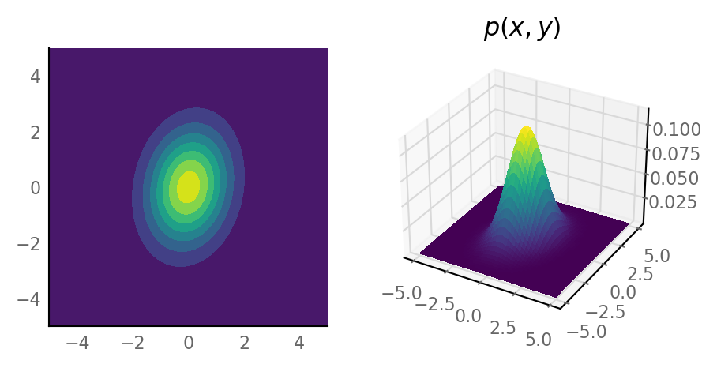
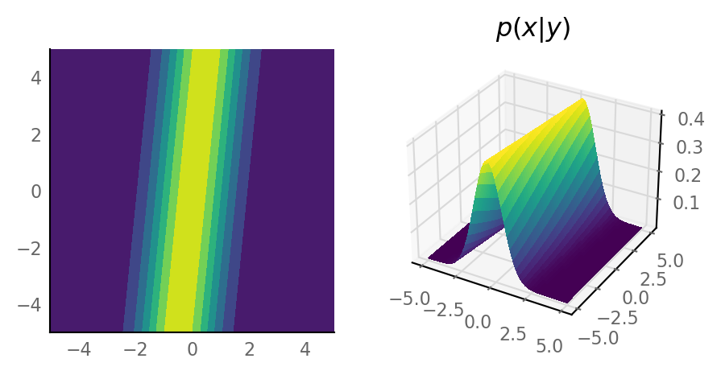
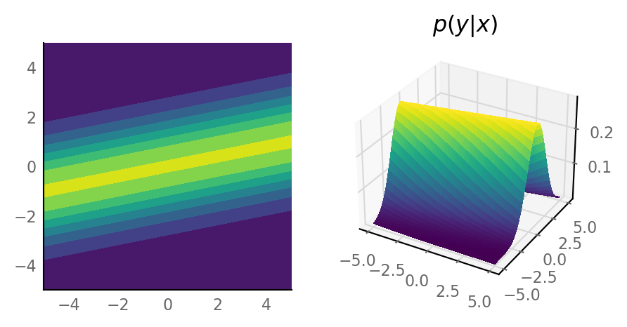
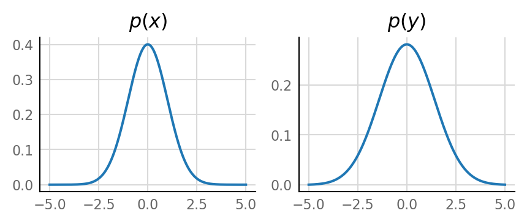
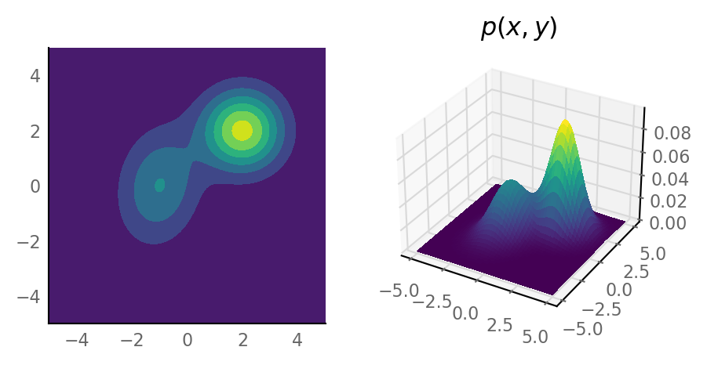
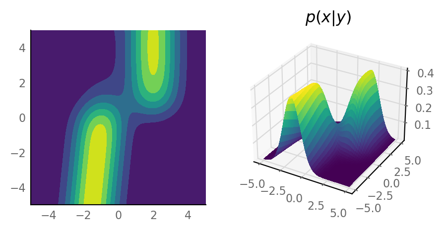
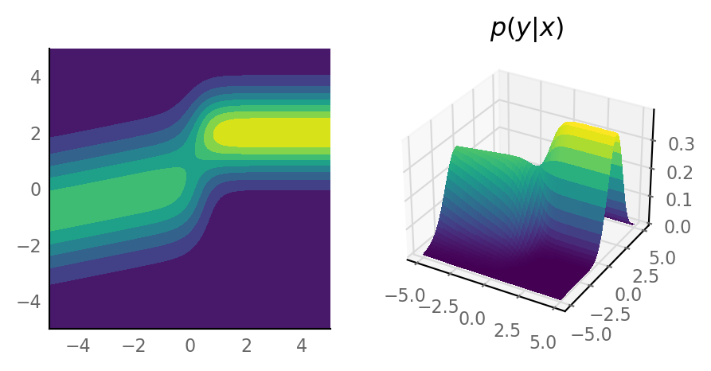
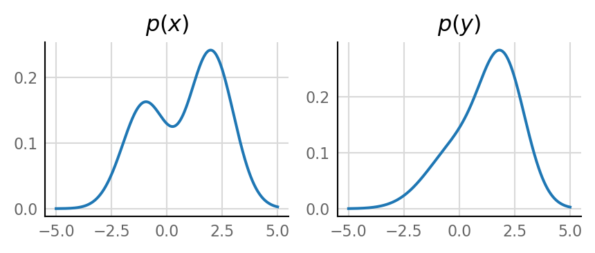

2021-03-10 • Conditional pdf
2021-03-10 • Conditional pdf¶
from tfiers.nb import *
Preloading: numpy, matplotlib.pyplot, pandas, seaborn.
Imported `np`, `mpl`, `plt`, `sns`, `pd`
x = np.linspace(-5, 5, 500)
y = np.linspace(-5, 5, 502) # broadcasting error catching
xg, yg = np.meshgrid(x, y, indexing='ij')
xy = np.dstack([xg, yg])
def plot(z, title):
''' plot a function on xy grid '''
fig = plt.figure()
nrows = 1
ncols = 2
ax_2d = fig.add_subplot(nrows, ncols, 1)
ax_2d.contourf(xg, yg, z)
ax_2d.set_aspect('equal')
ax_3d = fig.add_subplot(nrows, ncols, 2, projection='3d')
ax_3d.plot_surface(xg, yg, z, cmap='viridis', antialiased=False)
ax_3d.set_title(f"${title}$")
def analyse(p_xy):
dx = np.diff(x)[0]
dy = np.diff(y)[0]
p_x = p_xy.sum(axis=1) * dx
p_y = p_xy.sum(axis=0) * dy
# integrate joint to get marginals
# (we assume evenly spaced grid, hence differential outside sum).
# conditionals
p_x_given_y = p_xy / p_y
p_y_given_x = p_xy / p_x[:,np.newaxis]
plot(p_xy, "p(x,y)")
plot(p_x_given_y, "p(x|y)")
plot(p_y_given_x, "p(y|x)")
fig, (ax1, ax2) = plt.subplots(ncols=2, **figsize(aspect=3))
ax1.plot(x, p_x)
ax1.set_title("$p(x)$")
ax2.plot(y, p_y)
ax2.set_title("$p(y)$")
from scipy.stats import multivariate_normal
Σ = [[1 , 0.2],
[0.2, 2 ]]
g = multivariate_normal.pdf(xy, cov=Σ)
analyse(g)




mog = (0.4 * multivariate_normal.pdf(xy, mean=[-1,0], cov=Σ)
+ 0.6 * multivariate_normal.pdf(xy, mean=[2,2])) # default Σ = I
analyse(mog)



